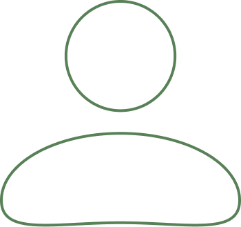
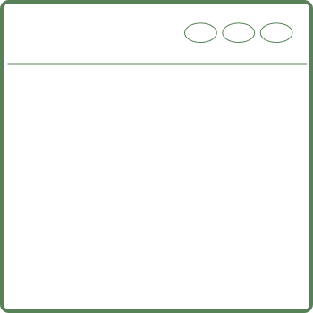
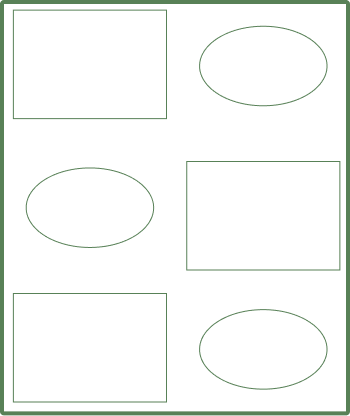

UX Design
I started learning and working with UX/UI design my freshman year at University of Miami. I am very passionate about generating user experiences and have thouroughly enjoyed working on projects where I can do so.

I started learning and working with UX/UI design my freshman year at University of Miami. I am very passionate about generating user experiences and have thouroughly enjoyed working on projects where I can do so.

I briefly learned web design in high school, where I worked with the foundations of HTML and CSS. In college, I took on more roles web designing using front-end design systems like Wordpress and Webflow, and I am now learning more in-depth HTML and CSS to be able to create these sites from scratch.

Graphic design is a relatively new realm that I have recently stepped into. I really enjoy expressing more creative designs via graphic design, and typically do things for more personal fun than I do for work or school.